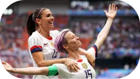
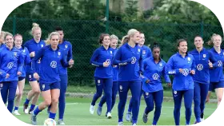

Feminism in the football : the case of the American federation !
Since the 2018 World Cup, women’s football is more and more publicized. Many people rediscover this sport thanks to marketing and thanks to professionalization from players. For more than 10 years, one team is gaining attention for these performances in the field but also for these global icons. this is the American women's football team.h4>

The American women's soccer team
Stars who are talked about !
The USWNT (United States women's national soccer team) are considered as one of the best team in the world. For more than 10 years, she released trophies and she has amazing ranking. The american selection is not only noticed for these performances, a few players have become media symbols!
All the workforce is good but two players stand out from the rest. Whether it be in the game or out the field, Alex Morgan and Megan Rapinoe are iconic players. Indeed, progressively, these two women collected a good visibility. Alex Morgan is the typical American icon. Perfect girl and ambassador of many brands, she perfectly represents American power. Him ease and quality of spoken make her one strong woman but especially a benchmark for women. Actually, his position allows to broken the cliché of the soccer is a boy sport.

Alex Morgan and Megan Rapinoe
A completely opposite for her teammate and her captain during the world cup 2019 : Megan Rapinoe. Elected Golden Ball in 2019, she is one of the best players on the team. Off the leads, she is active in the fights she leads. Police violence, LGBT community and improved representation of women in sport are example of her fights.
She use her notoriety and her outspoken to put emphasis on gender inequalities. For her, the gender inequalities in sport is as important as the daily gender inequalities. After the victory of U.S. team to the world cup 2019, she refused to go to the white house given that she don’t like Donald Trump ideas.
The legal attack on the players
In 2019, a case breaks out between the American federation of soccer and the players of the national team. The players denounce the wage inequalities between a men and they. We see indeed a big salary difference. For the men’s team, the USSF (The American Federation) was discharging 5,3 millions of dollars during the World Cup 2014 while the female team only received 1,7 million of dollars bonus. This situation is annoying because the men only reached the round of 16 while the women’s have win this competition.

The players at training
It is the same situation for the friendly games. For 20 friendly and won matchs, players (female) can win a maximum of 99 000 dollars. The men’s can win 263 320 dollars. The problem is that women’s have very good results while men’s have not good results. The 28 players therefore have to file a complaint.
The complaint could have been questioned because money and audience made by both teams is a big factor. Logically, the team who makes best benefices deserved more money. However, the female team does more audience. The female soccer is more popular in United States compared men soccer. This inequality is therefore clearly unjustified.

Megan Rapinoe received by Joe Biden
Unfortunately, the complaint was refused. Megan Rapinoe expressed on twitter after this decision. She has said : “We will never stop fighting for equality”. However, the american players do not intend to let it go. They will all do so that equality will one day be respected.